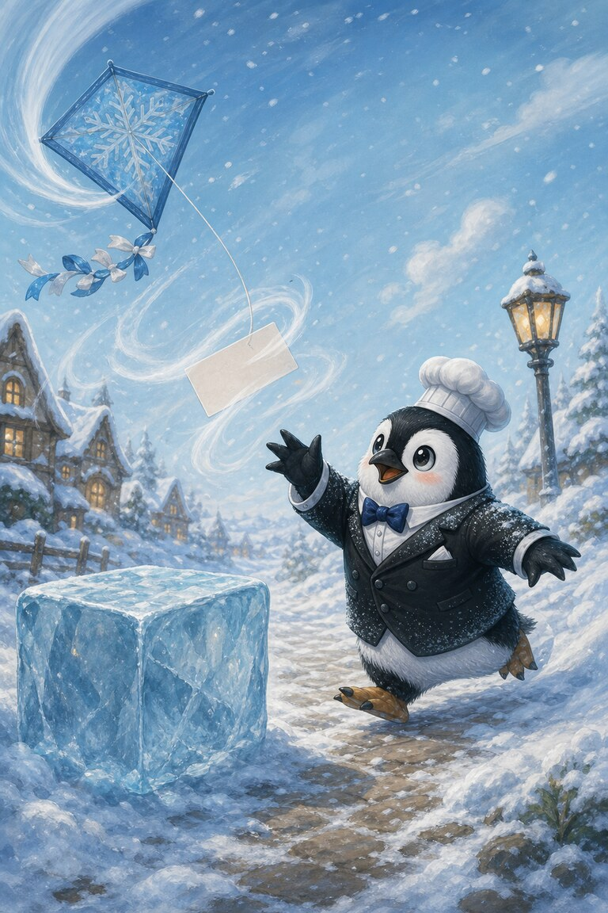
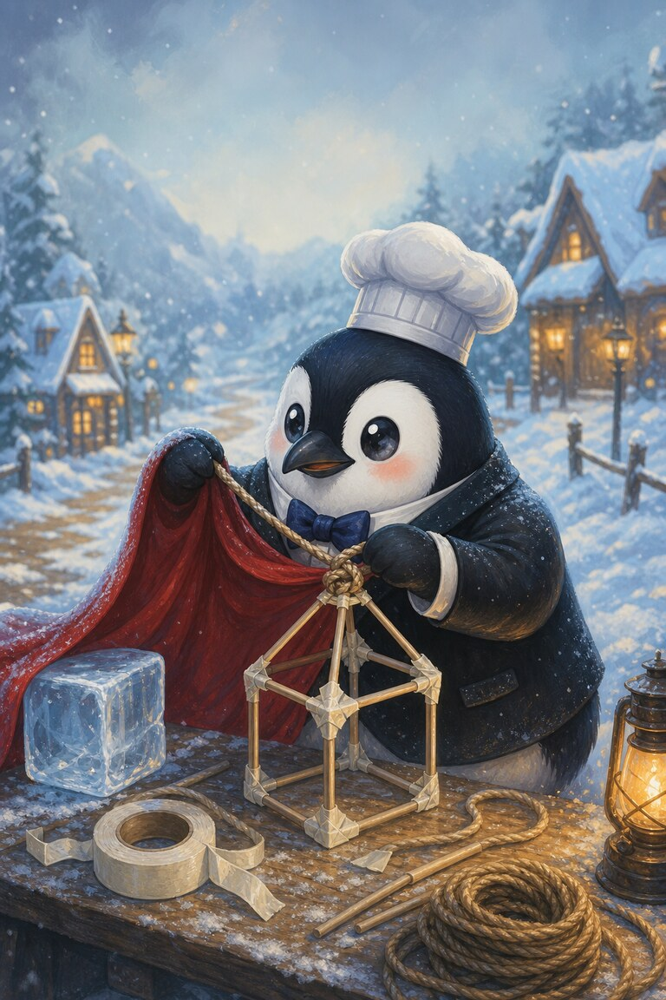
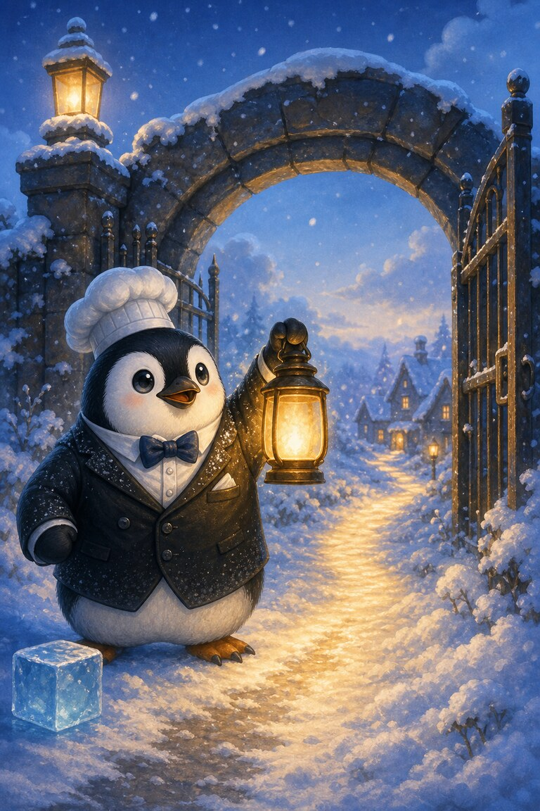
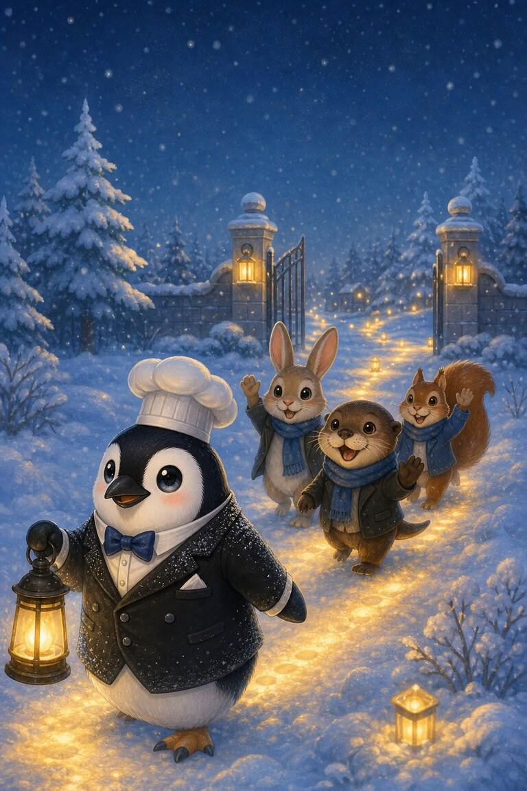

Page 1 of 5
Sub-Zero pins a note to a kite. He hopes it will guide his friends home through the snow.
A five-page snowy rescue for practising silent-e words like kite, note, rope and home.
Sub-Zero pins a note to a kite. He hopes it will guide his friends home through the snow.

The kite dives and the note slips free. A wave of wind sends it past an ice cube.

Sub-Zero uses tape and rope to make a safe lantern frame. His red cape becomes its bright shade.

He raises the lantern beside the gate. Its glow makes a clear line toward home.

His friends wave when they see the light. Sub-Zero saves the note, but the lantern carries the message.
A lantern. The lantern’s glow makes a clear line through the snow toward home.
SnackPack Sentences & Spelling has the full Reading Trail, longer stories, word packs and eight literacy games.
Next storyMeow‑inara’s Vowel‑Team Duet
Know a family or class who would enjoy it?